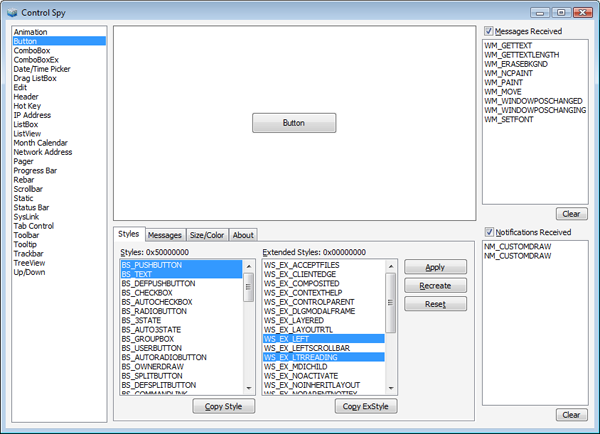
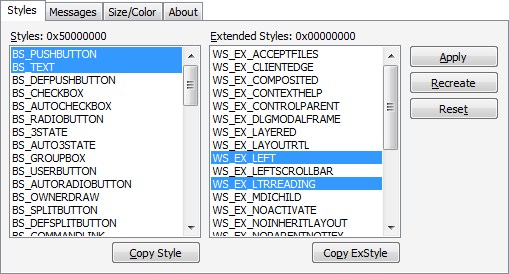
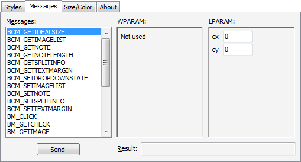

Control Spy is a tool that helps developers understand common controls: how to apply styles to them, and how they respond to messages and notifications. Using Control Spy, you can immediately see how different styles affect the behavior and appearance of each control, and also how you can change the state of each control by sending messages.
Two versions of Control Spy are available, one for Comctl32.dll version 5.x and one for Comctl32.dll version 6.0 and later. ControlSpyV6.exe has a built-in application manifest so that it uses the newer, themed controls. ControlSpyV5.exe does not have this manifest and so defaults to the older version.
This topic contains the following sections.
Control Spy hosts a selected common control in the center of its application window. You can change which control is shown by selecting different controls from the list box at the left side of the window. Messages or notifications received by the control will be listed at the right side of the window as they arrive. You can enable or disable this functionality by using the Messages Received and Notifications Received check boxes.
The following image shows the Control Spy application.

At the bottom of the window, there are several tabs that present more functionality.
The Styles tab enables you to change the current window style of the control. Select or deselect any of the listed styles, then click the Apply button to change the style of the displayed control. Alternately, you can use the Recreate button to create a new control with the selected styles. The Reset button will return the control to the default styles.
The Copy Style and Copy ExStyle buttons below the tab will copy the selected style constants to the Clipboard as a bitwise OR (|) delimited list. You can paste this list directly into your call to CreateWindowEx to provide a control in your own application with the same style.
The following image shows the Styles tab for a button control.

The Messages tab enables you to send almost any message to a control. After selecting a message from the list box, you can enter data which is sent as the wParam and lParam parameters of the call to SendMessage. After you click Send, the message is sent to the control and any result is displayed in the text box at the bottom of the tab.
The following image shows the messages tab when a particular message is selected.

The Size/Color tab can be used to change the size of the control as well as the color of its background.
Download Control Spy 2.0 (both versions are contained in the download).
Conceptual
Â
Â